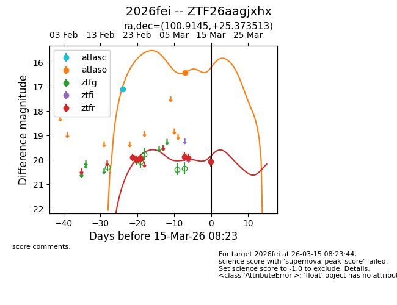
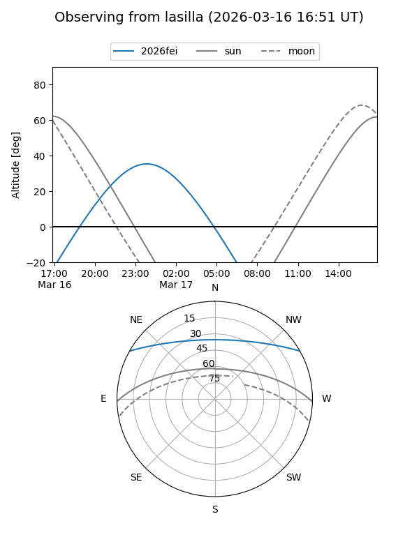
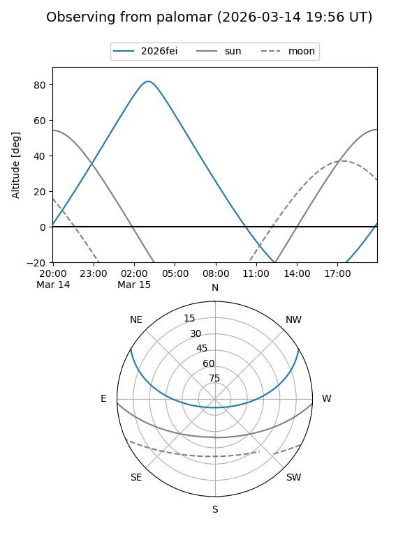
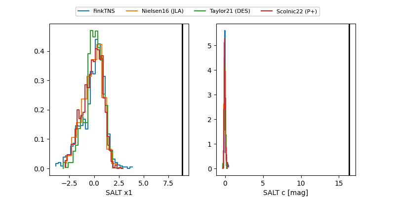

2026fei
Target 2026fei at 2026-03-15 08:25
Aliases and brokers:
FINK: link
Lasair: link
ALeRCE: link
TNS: link
YSE: link
alt names
ZTF26aagjxhx (ztf,fink_ztf)
2026fei (tns,yse)
Coordinates:
equatorial (ra, dec) = 100.9145,+25.37351
equatorial (HMS+DMS) = 06:43:39.48,+25:22:24.65
galactic (l, b) = (189.2871,+9.67766)
Flags:
Photometry:
last atlasc=17.08, atlaso=16.41, ztfr=20.08
2 atlasc, 1 atlaso, 6 ztfr detections
Lightcurve

Visibility


Additional plots
